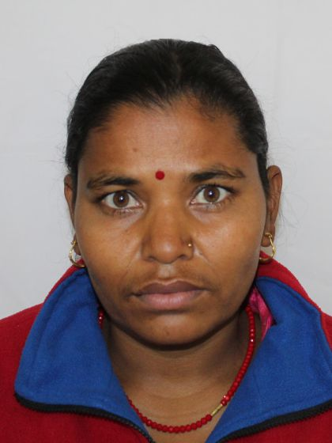

नेपाल मजदुर किसान पार्टी नेपालको एउटा वामपन्थी राजनीतिक दल हो। १९७६ मा रोहित समूह, सर्वहारा क्रान्तिकारी संगठन, नेपाल र किसान समितिको एकीकरणबाट यो दलको स्थापना गरिएको थियो । नारायणमान बिजुक्छे (रोहित) दलको अध्यक्ष छन्।
